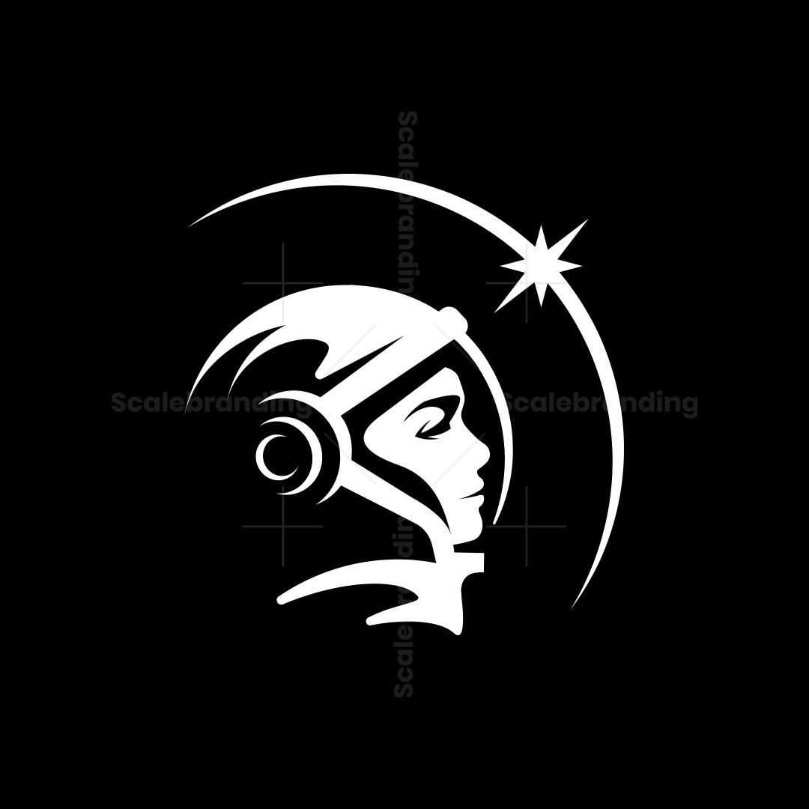

 |
Astronomia sem fim |
|---|
"O céu noturno que conhecemos é apenas o começo. O site é um projeto de astronomia especulativa que convida você a viajar por estrelas que não estão nos nossos mapas, mas que ganham vida aqui. Descubra novos mundos e deixe a sua curiosidade guiar esta viagem pelo espaço."
Explore um cosmos de possibilidades no site. Nosso acervo mapeia sistemas estelares, nebulosas e fenômenos astronômicos fictícios com riqueza de detalhes e criatividade. Uma experiência imersiva criada especialmente para mentes curiosas, apaixonadas pelas estrelas e pela ficção científica.
| Fisica | Astronomia | Quimica |
|---|---|---|
| possuimos | possuimos | embreve |